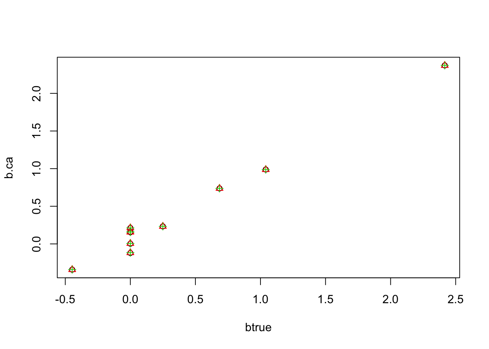
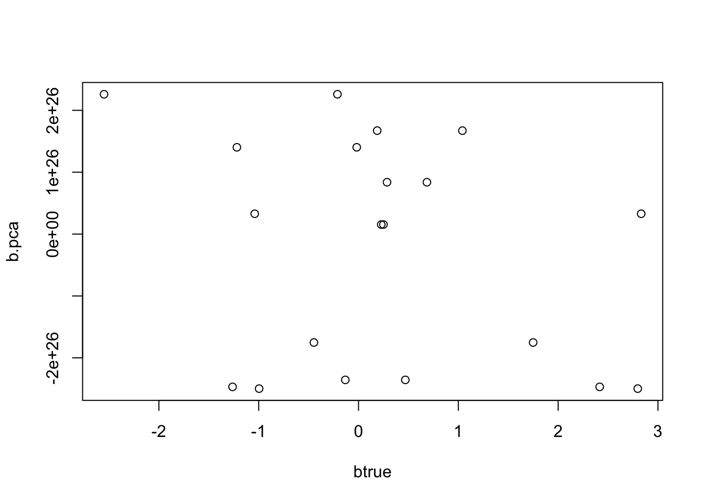

multiple regression with ash, parallel coordinate ascent
Matthew Stephens
2019-10-07
Last updated: 2019-10-25
Checks: 7 0
Knit directory: misc/analysis/
This reproducible R Markdown analysis was created with workflowr (version 1.4.0). The Checks tab describes the reproducibility checks that were applied when the results were created. The Past versions tab lists the development history.
Great! Since the R Markdown file has been committed to the Git repository, you know the exact version of the code that produced these results.
Great job! The global environment was empty. Objects defined in the global environment can affect the analysis in your R Markdown file in unknown ways. For reproduciblity it’s best to always run the code in an empty environment.
The command set.seed(1) was run prior to running the code in the R Markdown file. Setting a seed ensures that any results that rely on randomness, e.g. subsampling or permutations, are reproducible.
Great job! Recording the operating system, R version, and package versions is critical for reproducibility.
Nice! There were no cached chunks for this analysis, so you can be confident that you successfully produced the results during this run.
Great job! Using relative paths to the files within your workflowr project makes it easier to run your code on other machines.
Great! You are using Git for version control. Tracking code development and connecting the code version to the results is critical for reproducibility. The version displayed above was the version of the Git repository at the time these results were generated.
Note that you need to be careful to ensure that all relevant files for the analysis have been committed to Git prior to generating the results (you can use wflow_publish or wflow_git_commit). workflowr only checks the R Markdown file, but you know if there are other scripts or data files that it depends on. Below is the status of the Git repository when the results were generated:
Ignored files:
Ignored: .DS_Store
Ignored: .Rhistory
Ignored: .Rproj.user/
Ignored: analysis/.RData
Ignored: analysis/.Rhistory
Ignored: analysis/ALStruct_cache/
Ignored: data/.Rhistory
Ignored: data/pbmc/
Ignored: docs/figure/.DS_Store
Untracked files:
Untracked: .dropbox
Untracked: Icon
Untracked: analysis/GTEX-cogaps.Rmd
Untracked: analysis/PACS.Rmd
Untracked: analysis/SPCAvRP.rmd
Untracked: analysis/compare-transformed-models.Rmd
Untracked: analysis/cormotif.Rmd
Untracked: analysis/cp_ash.Rmd
Untracked: analysis/eQTL.perm.rand.pdf
Untracked: analysis/eb_prepilot.Rmd
Untracked: analysis/flash_test_tree.Rmd
Untracked: analysis/ieQTL.perm.rand.pdf
Untracked: analysis/m6amash.Rmd
Untracked: analysis/mash_bhat_z.Rmd
Untracked: analysis/mash_ieqtl_permutations.Rmd
Untracked: analysis/mixsqp.Rmd
Untracked: analysis/nejm.Rmd
Untracked: analysis/normalize.Rmd
Untracked: analysis/pbmc.Rmd
Untracked: analysis/poisson_transform.Rmd
Untracked: analysis/pseudodata.Rmd
Untracked: analysis/ridge_iterative_splitting.Rmd
Untracked: analysis/sc_bimodal.Rmd
Untracked: analysis/susie_en.Rmd
Untracked: analysis/susie_z_investigate.Rmd
Untracked: analysis/svd-timing.Rmd
Untracked: analysis/temp.Rmd
Untracked: analysis/test-figure/
Untracked: analysis/test.Rmd
Untracked: analysis/test.Rpres
Untracked: analysis/test.md
Untracked: analysis/test_sparse.Rmd
Untracked: analysis/z.txt
Untracked: code/multivariate_testfuncs.R
Untracked: data/4matthew/
Untracked: data/4matthew2/
Untracked: data/E-MTAB-2805.processed.1/
Untracked: data/ENSG00000156738.Sim_Y2.RDS
Untracked: data/GDS5363_full.soft.gz
Untracked: data/GSE41265_allGenesTPM.txt
Untracked: data/Muscle_Skeletal.ACTN3.pm1Mb.RDS
Untracked: data/Thyroid.FMO2.pm1Mb.RDS
Untracked: data/bmass.HaemgenRBC2016.MAF01.Vs2.MergedDataSources.200kRanSubset.ChrBPMAFMarkerZScores.vs1.txt.gz
Untracked: data/bmass.HaemgenRBC2016.Vs2.NewSNPs.ZScores.hclust.vs1.txt
Untracked: data/bmass.HaemgenRBC2016.Vs2.PreviousSNPs.ZScores.hclust.vs1.txt
Untracked: data/eb_prepilot/
Untracked: data/finemap_data/fmo2.sim/b.txt
Untracked: data/finemap_data/fmo2.sim/dap_out.txt
Untracked: data/finemap_data/fmo2.sim/dap_out2.txt
Untracked: data/finemap_data/fmo2.sim/dap_out2_snp.txt
Untracked: data/finemap_data/fmo2.sim/dap_out_snp.txt
Untracked: data/finemap_data/fmo2.sim/data
Untracked: data/finemap_data/fmo2.sim/fmo2.sim.config
Untracked: data/finemap_data/fmo2.sim/fmo2.sim.k
Untracked: data/finemap_data/fmo2.sim/fmo2.sim.k4.config
Untracked: data/finemap_data/fmo2.sim/fmo2.sim.k4.snp
Untracked: data/finemap_data/fmo2.sim/fmo2.sim.ld
Untracked: data/finemap_data/fmo2.sim/fmo2.sim.snp
Untracked: data/finemap_data/fmo2.sim/fmo2.sim.z
Untracked: data/finemap_data/fmo2.sim/pos.txt
Untracked: data/logm.csv
Untracked: data/m.cd.RDS
Untracked: data/m.cdu.old.RDS
Untracked: data/m.new.cd.RDS
Untracked: data/m.old.cd.RDS
Untracked: data/mainbib.bib.old
Untracked: data/mat.csv
Untracked: data/mat.txt
Untracked: data/mat_new.csv
Untracked: data/matrix_lik.rds
Untracked: data/paintor_data/
Untracked: data/temp.txt
Untracked: data/y.txt
Untracked: data/y_f.txt
Untracked: data/zscore_jointLCLs_m6AQTLs_susie_eQTLpruned.rds
Untracked: data/zscore_jointLCLs_random.rds
Untracked: docs/figure/cp_ash.Rmd/
Untracked: docs/figure/eigen.Rmd/
Untracked: docs/figure/fmo2.sim.Rmd/
Untracked: docs/figure/newVB.elbo.Rmd/
Untracked: docs/figure/poisson_transform.Rmd/
Untracked: docs/figure/rbc_zscore_mash2.Rmd/
Untracked: docs/figure/rbc_zscore_mash2_analysis.Rmd/
Untracked: docs/figure/rbc_zscores.Rmd/
Untracked: docs/figure/ridge_iterative_splitting.Rmd/
Untracked: docs/figure/susie_en.Rmd/
Untracked: docs/figure/test.Rmd/
Untracked: docs/trend_files/
Untracked: docs/z.txt
Untracked: explore_udi.R
Untracked: output/fit.k10.rds
Untracked: output/fit.varbvs.RDS
Untracked: output/glmnet.fit.RDS
Untracked: output/test.bv.txt
Untracked: output/test.gamma.txt
Untracked: output/test.hyp.txt
Untracked: output/test.log.txt
Untracked: output/test.param.txt
Untracked: output/test2.bv.txt
Untracked: output/test2.gamma.txt
Untracked: output/test2.hyp.txt
Untracked: output/test2.log.txt
Untracked: output/test2.param.txt
Untracked: output/test3.bv.txt
Untracked: output/test3.gamma.txt
Untracked: output/test3.hyp.txt
Untracked: output/test3.log.txt
Untracked: output/test3.param.txt
Untracked: output/test4.bv.txt
Untracked: output/test4.gamma.txt
Untracked: output/test4.hyp.txt
Untracked: output/test4.log.txt
Untracked: output/test4.param.txt
Untracked: output/test5.bv.txt
Untracked: output/test5.gamma.txt
Untracked: output/test5.hyp.txt
Untracked: output/test5.log.txt
Untracked: output/test5.param.txt
Unstaged changes:
Modified: analysis/minque.Rmd
Note that any generated files, e.g. HTML, png, CSS, etc., are not included in this status report because it is ok for generated content to have uncommitted changes.
These are the previous versions of the R Markdown and HTML files. If you’ve configured a remote Git repository (see ?wflow_git_remote), click on the hyperlinks in the table below to view them.
| File | Version | Author | Date | Message |
|---|---|---|---|---|
| html | 21577d7 | Matthew Stephens | 2019-10-12 | Build site. |
| Rmd | b80c99a | Matthew Stephens | 2019-10-12 | wflow_publish(“mr_ash_sca.Rmd”) |
| html | 721b34f | Matthew Stephens | 2019-10-07 | Build site. |
| Rmd | 09b4863 | Matthew Stephens | 2019-10-07 | workflowr::wflow_publish(“mr_ash_sca.Rmd”) |
library("ashr")Introduction
The idea here is to investigate a parallel approach to updating bhat in multiple regression with ash.
The basic idea is that the optimal b should be the fixed point of the following iterations: 1. r = (Y-Xb) 2. bhat = b + d^{-1}X’r 3. shat = sigma/sqrt(d) 4. b = ash(bhat,shat)
More accurately, I believe that if b is a fixed point of this then it will also be a fixed point of the regular coordinate ascent (at least, something like this should be true.)
To start with we fix g to N(0,1) to keep thing simple….
(Note that the rescaling step was supposed to allow scaling prior and posterior by some constant, but results suggest I may not have the details right here. Ignore this for now.)
mr_ash_parallel_ca_fix = function(X,Y,b_init=NULL,max_iter=100,sigma=1,tol=1e-5,rescale=FALSE){
if(is.null(b_init)){b_init = rep(0,ncol(X))}
b = b_init
d = Matrix::colSums(X * X)
c = 1
for(i in 1:max_iter){
r = Y- X %*% b
bhat = as.vector(b + (1/d)*(t(X) %*% r))
s = sigma/sqrt(d)
bhat.ash = ash(bhat,s,g=normalmix(1,0,c),fixg=TRUE)
bnew = get_pm(bhat.ash)
if(sum((bnew-b)^2)<tol){break;}
b=bnew
if(rescale){
fitted = X %*% b
v = get_psd(bhat.ash)^2
c = sum(fitted*Y)/(sum(fitted^2) + sum(d*v)) # regress Y on fitted values
b = c*b
}
}
print(paste0("niter = ",i))
return(b)
}
mr_ash_ca_fix = function(X,Y,b_init=NULL,max_iter=100,sigma=1,tol=1e-3,rescale=FALSE){
if(is.null(b_init)){b_init = rep(0,ncol(X))}
b = b_init
p = ncol(X)
d = Matrix::colSums(X * X)
c = 1
r = Y - X %*% b
v = rep(0,p) # vector of variances for rescaling
for(i in 1:max_iter){
err = 0
for(j in 1:p){
r = r + b[j]*X[,j]
bhat = (1/d[j])*sum(X[,j]* r)
s = sigma/sqrt(d[j])
bhat.ash = ash(bhat,s,g=normalmix(1,0,c),fixg=TRUE)
bj_new = get_pm(bhat.ash)
v[j] = get_psd(bhat.ash)^2 # store variances
err = err + (b[j]-bj_new)^2
b[j] = bj_new
r = r - b[j]*X[,j] # recompute residuals
}
if(rescale){
fitted = Y - r # so fitted = Xb
c = sum(fitted*Y)/(sum(fitted^2) + sum(d*v)) # regress Y on fitted values
b = c*b
r = Y - c * fitted
}
if(err<tol){break;}
}
print(paste0("niter = ",i))
return(b)
}
ridge = function(X,Y,sigma=1){
p = ncol(X)
S = sigma^2*diag(p) + t(X) %*% X
bhat = solve(S, t(X) %*% Y)
return(bhat)
}A toy example to check:
set.seed(123)
n= 100
p=10
X = matrix(rnorm(n*p),ncol=p,nrow=n)
btrue = rnorm(p)
Y = X %*% btrue + rnorm(n)
b.pca = mr_ash_parallel_ca_fix(X,Y)[1] "niter = 10"b.ca = mr_ash_ca_fix(X,Y)[1] "niter = 4"b.ridge = ridge(X,Y)
plot(btrue,b.ca)
points(btrue,b.pca,col=2,pch=2)
points(btrue,b.ridge,col=3,pch=3)
And a sparse example
btrue[1:5]=0
Y = X %*% btrue + rnorm(n)
b.pca = mr_ash_parallel_ca_fix(X,Y)[1] "niter = 9"b.ca = mr_ash_ca_fix(X,Y)[1] "niter = 4"b.ridge = ridge(X,Y)
plot(btrue,b.ca)
points(btrue,b.pca,col=2,pch=2)
points(btrue,b.ridge,col=3,pch=3)
Now try example with X duplicated. As might have been anticipated, it fails to converge and returns a ridiculous solution that seems to be diverging off to +-infinity.
set.seed(123)
n= 100
p=10
X = matrix(rnorm(n*p),ncol=p,nrow=n)
X = cbind(X ,X)
btrue = rnorm(2*p)
Y = X %*% btrue + rnorm(n)
b.pca = mr_ash_parallel_ca_fix(X,Y)[1] "niter = 100"b.ca = mr_ash_ca_fix(X,Y)[1] "niter = 48"b.ridge = ridge(X,Y)
plot(btrue,b.ca)
points(btrue,b.pca,col=2,pch=2)
points(btrue,b.ridge,col=3,pch=3)
print(b.pca) [1] -8.204435e+27 1.079512e+27 4.606275e+27 -7.740797e+27 7.422769e+27
[6] 5.492114e+27 5.070576e+26 -8.111340e+27 2.752684e+27 -5.756308e+27
[11] -8.204435e+27 1.079512e+27 4.606275e+27 -7.740797e+27 7.422769e+27
[16] 5.492114e+27 5.070576e+26 -8.111340e+27 2.752684e+27 -5.756308e+27Try same thing initializing from truth - it still diverges.
b.pca = mr_ash_parallel_ca_fix(X,Y,b_init = btrue)[1] "niter = 100"plot(btrue,b.pca)
Note that the fitted values do not fit Y at all for the parallel case. The others do.
plot(Y,X %*% b.pca)
| Version | Author | Date |
|---|---|---|
| 21577d7 | Matthew Stephens | 2019-10-12 |
plot(Y,X %*% b.ca, col=, pch=2, main="fitted values for ridge and CA")
points(Y,X %*% b.ridge, col=3,pch=3)
| Version | Author | Date |
|---|---|---|
| 21577d7 | Matthew Stephens | 2019-10-12 |
See if CA matches ridge with more stringent convergence tolerance:
b.ca = mr_ash_ca_fix(X,Y,tol = 1e-8,max_iter=1000)[1] "niter = 370"plot(btrue,b.ca)
points(btrue,b.ridge,col=3,pch=3)
Rescaling
Next I tried rescaling the fitted values and prior each iteration by a constant c. This might seem ad hoc, but I think something like this can be justified as scaling both the prior and the posterior approximation (although results later suggest I might have the details wrong…)
In this example, rescaling definitely stabilizes the estimates…
b.pca = mr_ash_parallel_ca_fix(X,Y,b_init = btrue,max_iter = 100,rescale=TRUE)[1] "niter = 100"plot(Y,X %*% b.pca)
points(Y,X %*% b.ca, col=2, pch=2)
points(Y,X %*% b.ridge, col=3,pch=3)
| Version | Author | Date |
|---|---|---|
| 21577d7 | Matthew Stephens | 2019-10-12 |
I poked around and found that in fact it was flipping between two different solutions. Here I run it for 99 and 98 iterations to illustrate.
b.pca.99= mr_ash_parallel_ca_fix(X,Y,b_init = btrue,max_iter = 99,rescale=TRUE)[1] "niter = 99"b.pca.98= mr_ash_parallel_ca_fix(X,Y,b_init = btrue,max_iter = 98,rescale=TRUE)[1] "niter = 98"plot(b.pca,b.pca.98)
plot(b.pca,b.pca.99)
trend filtering example
This example the X will be highly correlated, but not completely so. It is designed to be challenging but easy to visualize what is going on.
set.seed(100)
n = 100
p = n
X = matrix(0,nrow=n,ncol=n)
for(i in 1:n){
X[i:n,i] = 1:(n-i+1)
}
btrue = rep(0,n)
btrue[40] = 8
btrue[41] = -8
Y = X %*% btrue + rnorm(n)
plot(Y)
lines(X %*% btrue)
| Version | Author | Date |
|---|---|---|
| 21577d7 | Matthew Stephens | 2019-10-12 |
The ridge solution is much better than ca, presumably due to very slow convergence. (The solution looks better with 1000 iterations, but has still not converged; not shown here to keep runtime down…)
bhat_ca = mr_ash_ca_fix(X,Y,max_iter = 100,tol=1-8)[1] "niter = 100"bhat_r = ridge(X,Y)
plot(Y)
lines(X %*% bhat_ca,col=2)
lines(X %*% bhat_r, col=3)
Parallel version goes crazy; again rescaling helps stabilize but not really working.
bhat_pca = mr_ash_parallel_ca_fix(X,Y,max_iter= 10) [1] "niter = 10"plot(X %*% bhat_pca,col=4)
bhat_pca = mr_ash_parallel_ca_fix(X,Y,max_iter= 100, rescale=TRUE) [1] "niter = 100"plot(Y)
lines(X %*% bhat_pca,col=4)
sessionInfo()R version 3.6.0 (2019-04-26)
Platform: x86_64-apple-darwin15.6.0 (64-bit)
Running under: macOS Mojave 10.14.4
Matrix products: default
BLAS: /Library/Frameworks/R.framework/Versions/3.6/Resources/lib/libRblas.0.dylib
LAPACK: /Library/Frameworks/R.framework/Versions/3.6/Resources/lib/libRlapack.dylib
locale:
[1] en_US.UTF-8/en_US.UTF-8/en_US.UTF-8/C/en_US.UTF-8/en_US.UTF-8
attached base packages:
[1] stats graphics grDevices utils datasets methods base
other attached packages:
[1] ashr_2.2-38
loaded via a namespace (and not attached):
[1] Rcpp_1.0.2 knitr_1.23 whisker_0.3-2
[4] magrittr_1.5 workflowr_1.4.0 MASS_7.3-51.4
[7] pscl_1.5.2 doParallel_1.0.14 SQUAREM_2017.10-1
[10] lattice_0.20-38 foreach_1.4.7 stringr_1.4.0
[13] tools_3.6.0 parallel_3.6.0 grid_3.6.0
[16] xfun_0.8 git2r_0.26.1 htmltools_0.3.6
[19] iterators_1.0.12 yaml_2.2.0 rprojroot_1.3-2
[22] digest_0.6.20 mixsqp_0.1-97 Matrix_1.2-17
[25] fs_1.3.1 codetools_0.2-16 glue_1.3.1
[28] evaluate_0.14 rmarkdown_1.14 stringi_1.4.3
[31] compiler_3.6.0 backports_1.1.4 truncnorm_1.0-8